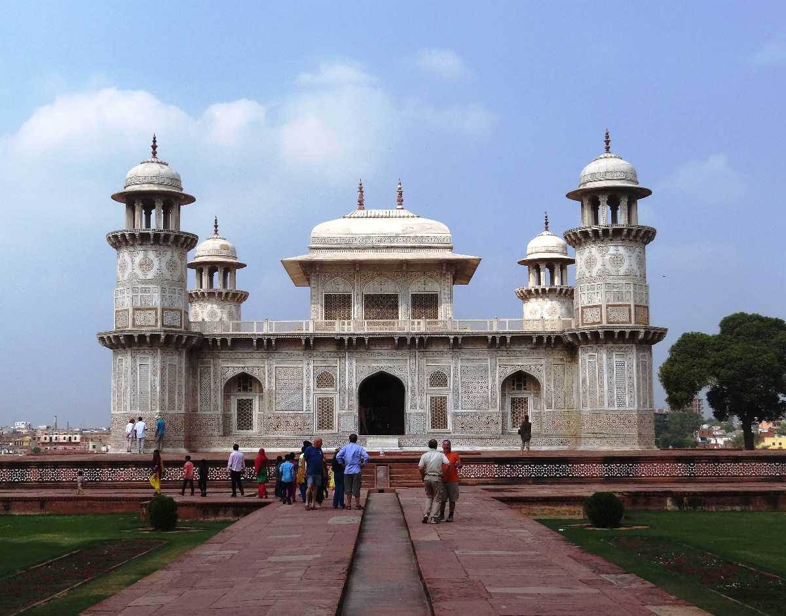

TAJ MAHAL
Built by: Shah Jahan
Built in: 1631 – 1648
 Best Time to Visit:October to March.
Best Time to Visit:October to March.
Ideal Duration: 2 days.
Best Places to Visit in Agra: Agra Fort, Jama Masjid, Abkar’s Tomb, Itimad-ud-Daulah’s Tomb, Mehtab Bagh, Gurudwara Guru Ka Taal, Dolphin Water Park, Wildlife Conservation and Care Centre.
Things to Do in Agra: Boat ride on Yamuna River, exploring popular monuments, watching the Light and Sound Show at Agra Fort, visiting Fatehpur Sikri, shopping at Kinari Bazaar, Subhash Bazaar and TDI Mall, relishing authentic Mughlai dishes and street foods.
How to Reach
Nearest Airport: Agra Airport; New Delhi’s Indira Gandhi International Airport.
Nearest Train Station: Agra Cantonment Railway Station
Itimad-ud-daulah's Tomb
Built In : Between 1622 and 1628
